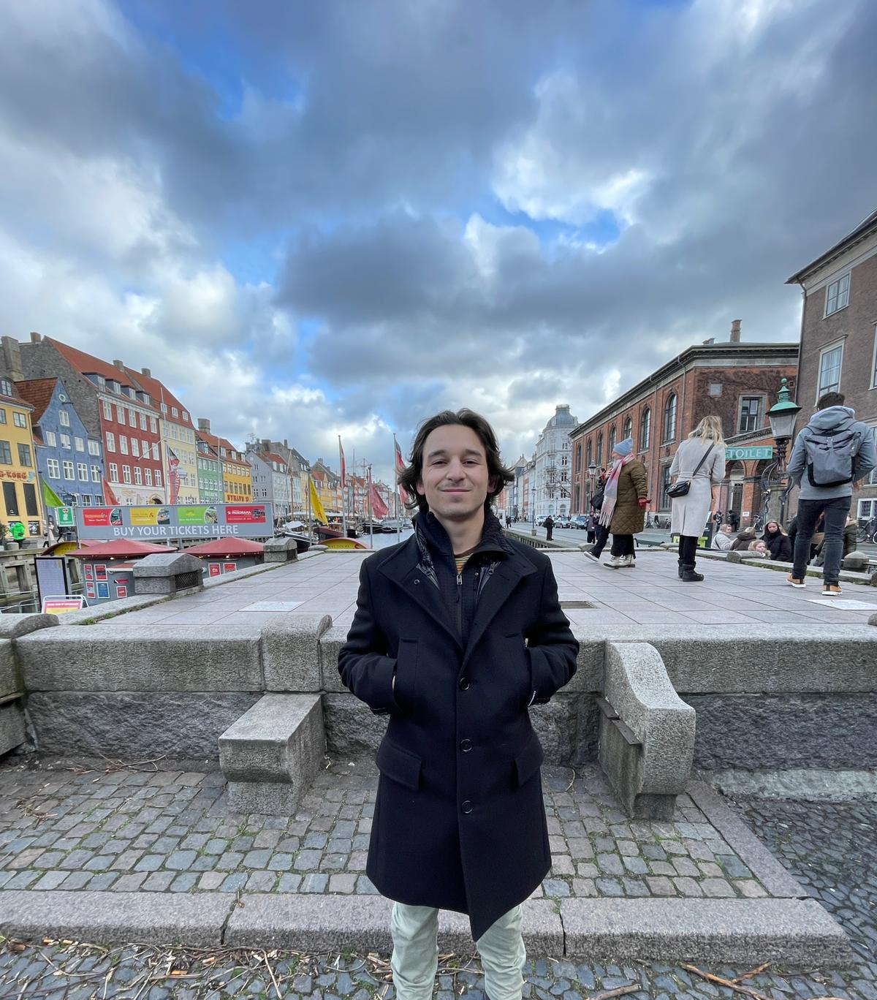
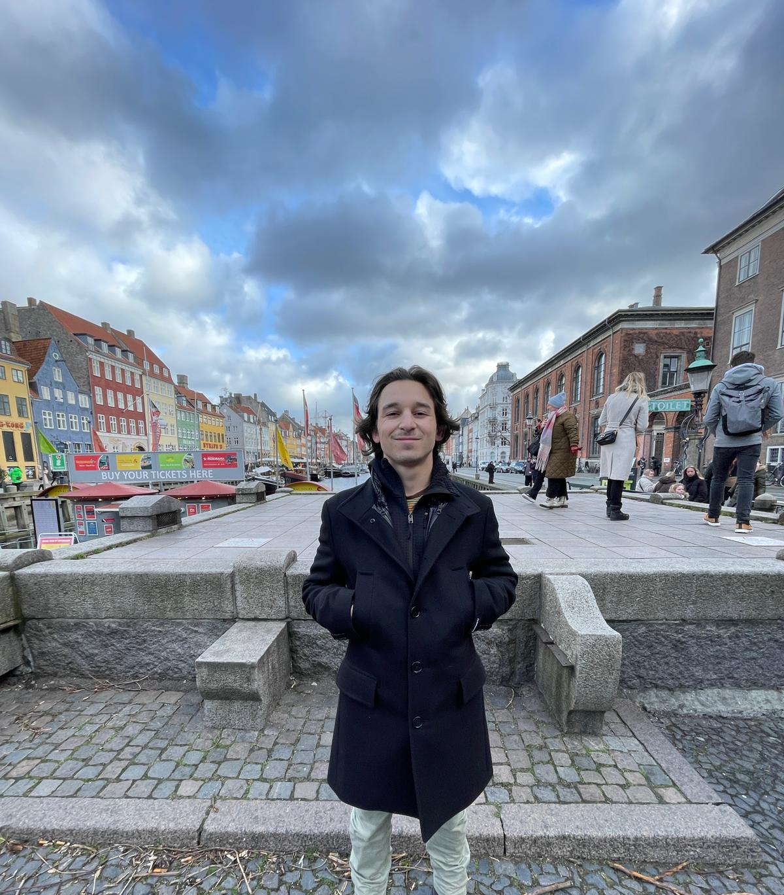

Personal Life
I am currently a student at the University of Colorado Boulder. I am majoring in Business Administration with an emphasis in Strategy and Entreprenuership, and minoring in Creative Design and Technology. Throughout my time at CU, I have taken a variety of classes from sustainable operations to web design. These class have given me the knowledge to become a business professional while pursuing my passion of graphic design. I could not be more thankful with my course load over these past few years.
Growing up in Atlanta, GA, I would spend alot of my summers in the Blue Ridge Mountains and other national parks around the US. I connected with nature and found a love for the Great Outdoors rather than with the city of Atlanta. I never was a big fan of cement jungles; however, I have always been a fan of natural jungles and mountain ranges. Throughout my years, I have been involved in many outdoor activities such as rock climbing, white water rafting, and hiking to name a few. But none of them excite me as much as backapcking. The longest backapcking trip I have ever been on was a 6-day trip along the Colorado portion of the continental divide; it was an amazing experience. Due to my love for nature and backpacking, it has been a lifelong goal of mine to thru-hike the Appalachian Trail, which is approximately 2,200 miles long. If everything goes according to plan, I am going to thru-hike it right after graduation in May and end around November. Wish me luck!
About This Site
I created this website for one of my classes at the University of Colorado Boulder: ATLS 2200 - Web. Throughout This class, I have learned HTML and CSS, and I will learn Java Script later on the semester. My professor, Anthony Pinter, has a pretty cool and interactive website, so I modeled some of my headings after his website. The design of the website is of my own creation, and I wanted to create a solid color scheme where most of the colors contrasted well with each other. Listed below are some of my goals for the Web design class.
My goals for this course include:
- Learn the basics of HTML
- Learn how to stylistically format a website
- Create a personal website
Pictures of Me
 
